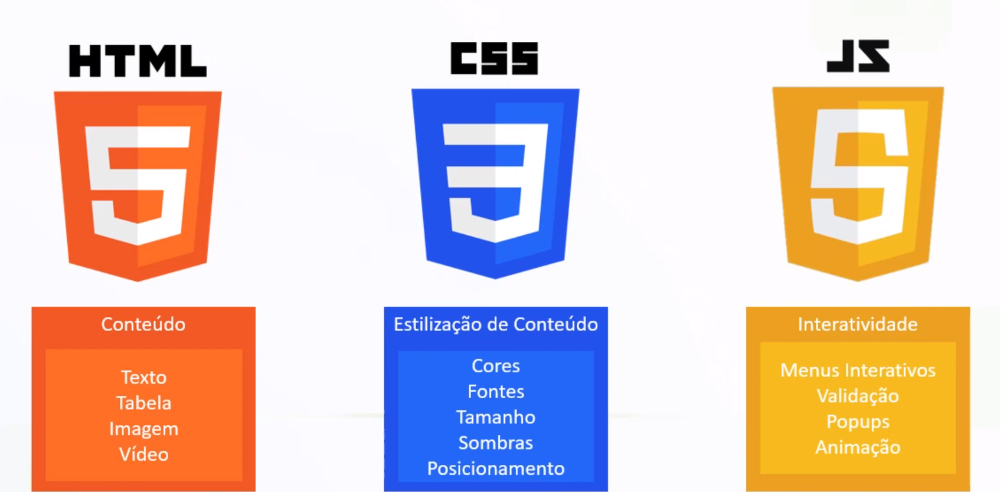
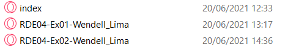
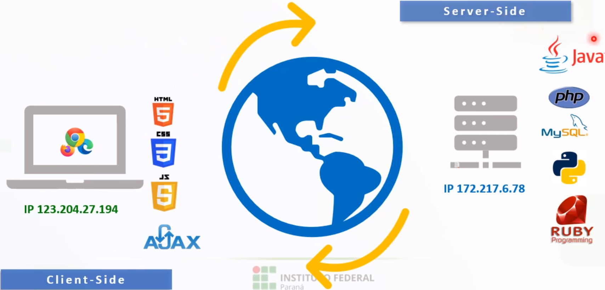

[Direitos de imagens Reservados ao Prof. Francis Baranoski]
Ambiente de Trabalho
Para implementação usamos Editores de Códigos como: VSCODE, Notepad++, Eclipse, etc.
E para visualizarmos a implementação usamos os navegadores como: Chrome, Firefox, Edge, etc.
Tecnologias
Existem também as Tecnologias. Elas nos orientam dentro do Desenvolvimento Web
HTML
-Serve para inserção do conteúdo.
CSS
-Serve para Estilização do conteúdo.
Java Script
-Serve para interação do conteúdo com o usuário.

Página Web e Website
Página Web
É um arquivo singular onde insere-se a linguagem marcação de hipertexto e também a parte do CSS e JavaScript
Websites ou Sites
São todo o conjuto de páginas webs, armazenadas em uma pasta ou em subpastas relacionas de um servidor web.

Arquitetura Cliente-Servidor
Nessa arquitetura existem as linguagens que trabalham na parte de interação com o cliente como: HTML, CSS, JS e Ajax.
E existem as linguagens que trabalham na parte em que o cliente não vê como: Java,Ruby,MySQL,Python,etc.

Tipos de Programadores
Front-End
Trabalha com as linguagens de interação com o cliente como HTML,CSS e JavaScript.
Back-End
Trabalha com as linguagens que não interagem diretamente com o cliente como Java,SQL,PHP,Python.
FullStack
Trabalha com os dois tipos de linguagens, tanto front-end como back-end.
HTML
Significa Hypertext Markup Language.
Criada por Tim Berners-Lee em 1990.
TAGS
As tags possuem funcionalidades específicas, sem o uso delas a exibição seria um texto plano.
Sintaxe: <nome_tag>conteúdo</nome_tag>
Estrutura básica HTML
<html>
ㅤㅤㅤㅤ<head>
ㅤㅤㅤㅤ ㅤㅤㅤㅤ <title>Título da Barra de título</title>
ㅤㅤㅤㅤ</head>
ㅤㅤㅤㅤ<body>
ㅤㅤㅤㅤ ㅤㅤㅤㅤ Seu texto será digitado aqui.
ㅤㅤㅤㅤ</body>
</html> ㅤ
Quebra de linha
Para quebras de linhas é usado a seguinte sintaxe: <br>
Sintaxes para formatação do texto
Negrito
Para usar o negrito usa-se a seguinte sintaxe: <b> e </b> ou <strong> e </strong>
Itálico
Para usar o itálico usa-se a seguinte sintaxe: <i> e </i> ou <em> e </em>
Fonte
Para mudar o tamanho ou a cor da fonte usa-se a seguinte sintaxe: <font color"cor" size"tamanho da fonte" texto que será usado essa fonte > </font>
TIPOS DE LISTAS
1990 - Criação do HTML
1995 - Versão 2.0
1997 - Versão 3.2
1999 - Versão 4.0
2014 - Versão HTML 5
1990 - Criação do HTML
1995 - Versão 2.0
1997 - Versão 3.2
1999 - Versão 4.0
2014 - Versão HTML 5
1990 - Criação do HTML
Invenção da Linguagem HTML.
1995 - Versão 2.0
Formalizar todas as características HTML que já eram utilizadas.
1997 - Versão 3.2
Permite a criação de tabelas, applets e texto flutuante ao redor de imagens.
1999 - Versão 4.0
Suporte para opções multimídias, folha de estilos e melhorar as práticas de marcação
2014 - Versão HTML 5
Aperfeiçoar a experiência da World Wide Web para os desenvolvedores e usuários finais
Wendell Maciel de Lima
Informática 3º Info-Manhã
Instituto Federal do Paraná Campus Irati
R. Pedro Koppe, 100 - Vila Sao Joao, Irati - PR 84507-302